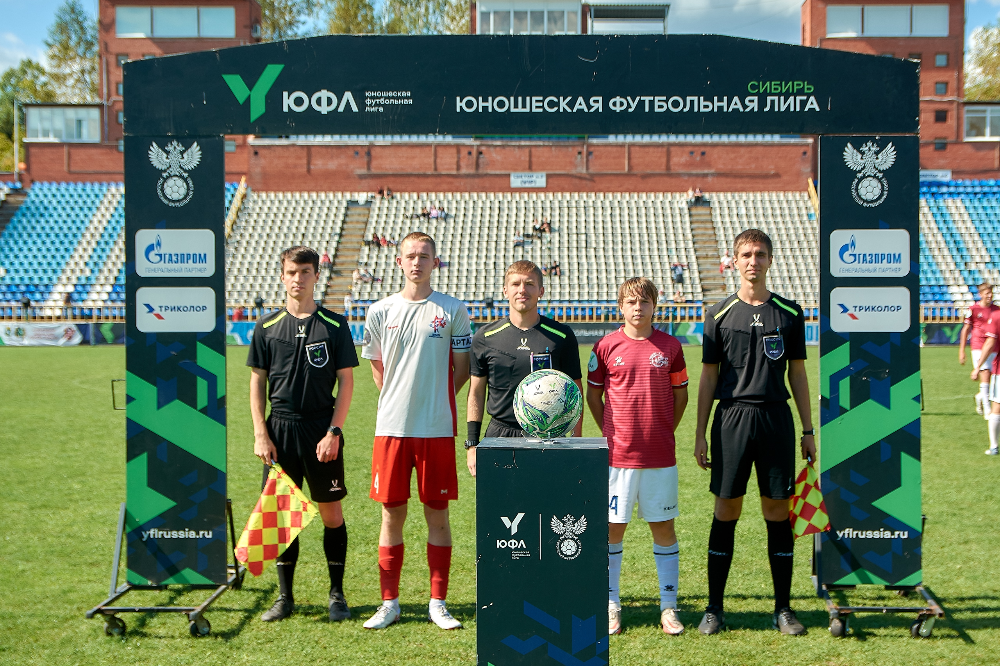

Судейская карьера и ее значение
Моя судейская карьера началась в момент, когда я понял, что не смогу играть в футбол всю свою жизнь. Судейство дало мне возможность остаться в спорте, быть рядом с игрой, но с новой, важной ролью. Я стал изучать правила, участвовать в тренингах для арбитров и стремиться к совершенствованию.
Опыт работы с крупными компаниями
В ходе своей карьеры я участвовал в организации спортивных мероприятий для таких крупных компаний, как «Газпром», «Сибагро» и «Межениновская птицефабрика». Это не только дало мне навыки работы с большими коллективами, но и позволило узнать, как масштабно проводятся крупные турниры. На каждом мероприятии присутствовало более 1000 человек.